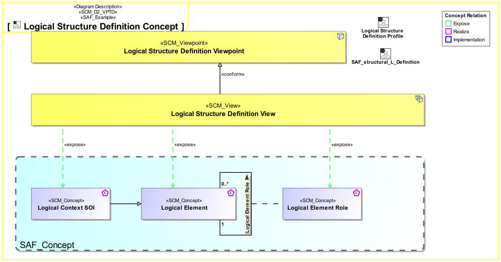
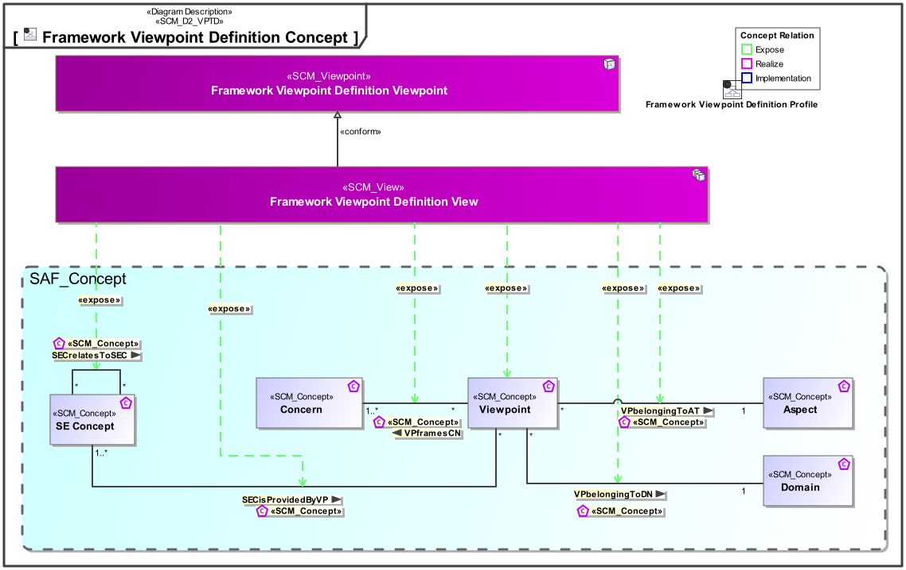
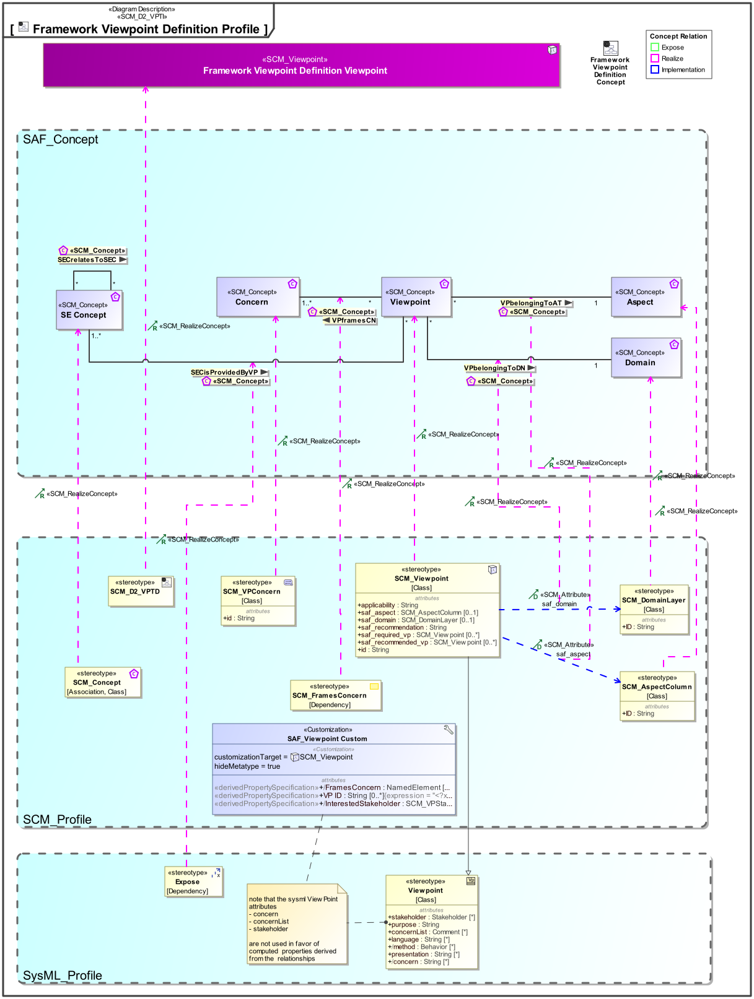

D2_VPTD Framework Viewpoint Definition Viewpoint
| Domain | Aspect | Maturity |
|---|---|---|
| SAF Development | Taxonomy & Structure |

The Framework Viewpoint Definition Viewpoint serves as a specification for any SAF viewpoints in the context of the development of SAF. The Viewpoint shall specify
The Viewpoint supports the “Specification of an architecture description framework” as defined in ISO42010:2022
A View and Viewpoints Diagram featuring one SCM Viewpoint Element, one SCM_View element, a conform relationship among them. Additionally all SCM_Concept elements that are of interest in the viewpoint. Additionally expose relationships for all concepts that help satisfy the viewpoints concerns. Note, that the consequence of exposing a concept is, that the implementation of the concept must appear in the diagram/table/matrix that implements the viewpoint.
The following Stereotypes / Model Elements are used in the Viewpoint:
The Diagram shows the concepts exposed by the viewpoint, and related concepts if necessary.

| Concept | Documentation |
|---|---|
| SECisProvidedByVP | Specifies, that one or more SE Concepts are provided by the Viewpoints Views |
| SECrelatesToSEC | specifies a relationship of a concept to an other. |
| Viewpoint | A architecture viewpoint defines set of conventions for the creation, interpretation and use of an architecture view to frame one or more concerns |
| VPbelongingToAT | specifies that a viewpoint belongs to one aspect. |
| VPbelongingToDN | specifies that a viewpoint belongs to one domain. |
| VPframesCN | Specifies that a Viewpoint frames one or more concerns. That means that the views conform to that viewpoint satisfy the information need expressed by the concerns. |
The Diagram shows the implementation of exposed concepts.

| Concept | Realization |
|---|---|
| SECisProvidedByVP | |
| SECrelatesToSEC | SCM_Concept |
| Viewpoint | SAF_Viewpoint |
| VPbelongingToAT | SAF_Viewpoint |
| VPbelongingToDN | SAF_Viewpoint |
| VPframesCN | SCM_FramesConcern |